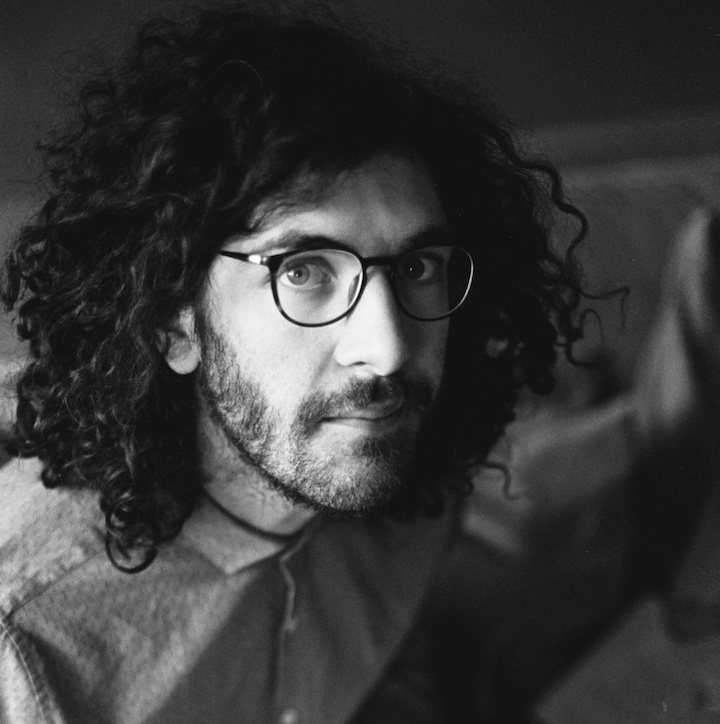
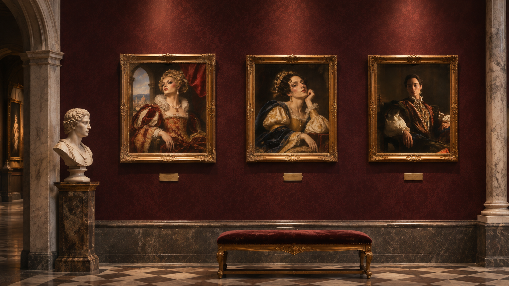

Zizi Queering the Dataset
האמן Jake Elwes מאמן מודל בינה מלאכותית על מאגר FFHQ, המכיל כ-70,000 תמונות פנים. המאגר אינו מייצג באופן מספק את המגוון המגדרי והחזותי של מופעי דראג וזהויות קוויריות. כדי לערער על ההטיות הללו הוא מוסיף כ-1,000 תמונות של אמני ואמניות דראג ומאמן מחדש את המודל.
המרחב הלטנטי חושף כיצד הבינה המלאכותית לומדת ומארגנת ייצוגים של פנים, מגדר וזהות בהתאם למידע שעליו אומנה. הדימויים המשתנים והמעוותים בעבודה מדגישים את חוסר היציבות של הקטגוריות המגדריות ואת האפשרות לחרוג מהן. במקביל, המרחב הלטנטי מעלים את המורכבות של זהות אנושית, כשהוא מצמצם אותה למאפיינים חזותיים ולדפוסים סטטיסטיים, ללא ההקשרים האישיים, החברתיים והתרבותיים שמאחוריהם.
האסטרטגיה המרכזית בעבודה היא גליץ' (Glitch). העיוותים והמעברים הלא־טבעיים בין הפנים אינם רק תקלות טכנולוגיות, אלא אמצעי אמנותי שחושף את מגבלות המודל ואת ההטיות המוטמעות בו. באמצעות הגליץ', אלווס מערער על הניסיון של הבינה המלאכותית לייצר ייצוגים אחידים ויציבים של זהות ומגדר, והופך את מה שנתפס ככשל של המערכת לאפשרות של ביטוי והתנגדות.
